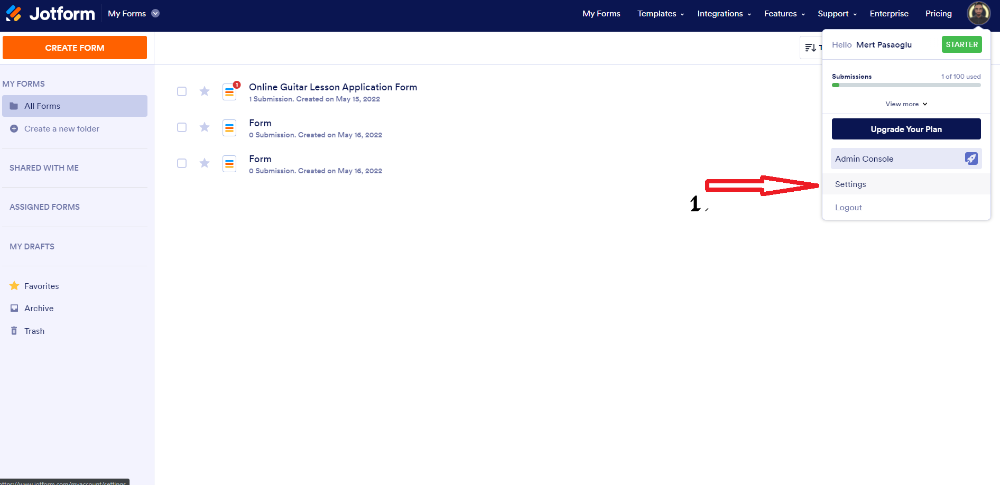
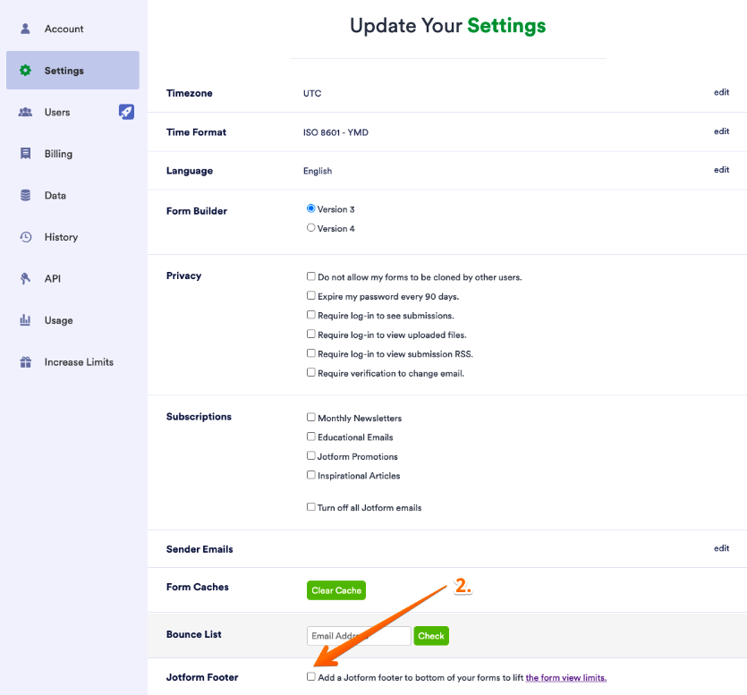
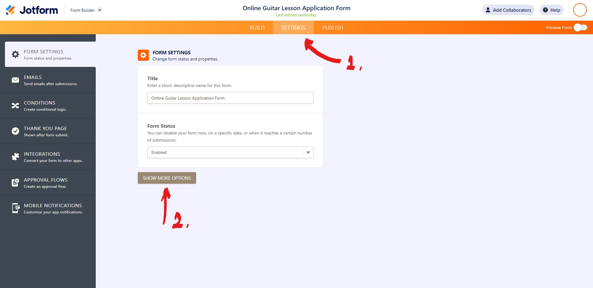
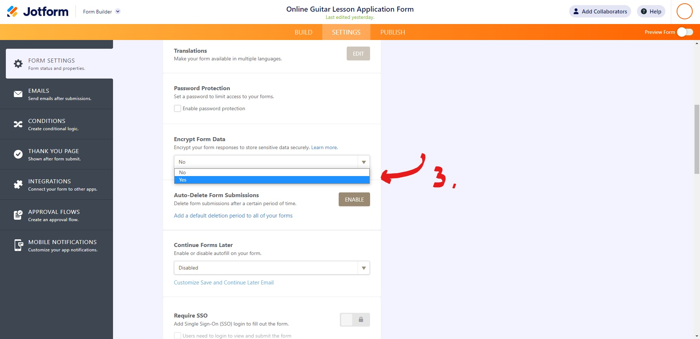

Question-1
How do I insert a link into a form?
How do I insert a link into a form?
Hi Sylvanas,
Thanks for reaching out to Jotform Support. It's really easy to add a
link to your form. Let me show you how:
- Add a Paragraph field to the form
- Click on Edit Text
-
Add some text and highlight the text where you want to add a link
- Click on the Insert/edit link option
- In the URL field insert your link and click on the OK button
- Save changes

Give it a try and reach out again if you have any other questions.
Question-2
How can I create a bilingual survey?
How can I create a bilingual survey?
Hi Illidan,
Thanks for reaching out to us for help. Our
translation tool
lets you to create a bilingual survey easily. Let me show you how to
use it:
- Go to the Settings tab in the Form Builder.
- Click the Show More Options button.
- Scroll down to the Form Language section.
- Select the default language of your form.
-
Right below the Form Language section, click the
Edit button next to Translations.
- Click the Add form language button next.
- Select the language you want to translate the form to.
- Finally, click the Add Form Language button.

The translation window should open up with the selected language.

You can start adding your translations. All changes you perform are
automatically saved.
Give it a try and let us know if you have any other questions.
Question-3
Can I make a QR code for my form?
Can I make a QR code for my form?
Hi Monica,
Thanks for using Jotform. QR code coming with forms by default. It is
located on the Publish page under the Share Form tab >
Download QR Code.

You might also want to check out
this guide
about QR code.
Let us know if there’s anything else we can do for you.
Question-4
How To Remove Advertising?
I upgraded my account but still getting the advertising on the form.
How can I get thoese removed?
Hello Rachel,
Thanks for reaching out to Jotform Support. It is easy to remove
advertising from your form. Here’s how to do it:
-
Open your My Forms page and hover your mouse over your
Profile Picture/Avatar on the right side of the page.
- In the little window that opens up, click on Settings.

-
Once in Settings, scroll down to the
Jotform Footer section and uncheck it.

Now you won't see the Jotform Branding on your form.
Let us know if there’s anything else we can do for you.
Question-5
How Do I Encrypt My Data?
How do I encrypt my data?
Hello Scarlett,
Thanks for reaching out to Jotform Support. It is easy to encrypt form
data. Let me show you how to do it:
-
Open your form, on the orange navigation tab, click the settings.
-
A prompt will show on the left side where you can choose
Form Settings then click the Show More Options button.

- Find Encrypt form data and set it to Yes.

Let us know if there’s anything else we can do for you.
.png)